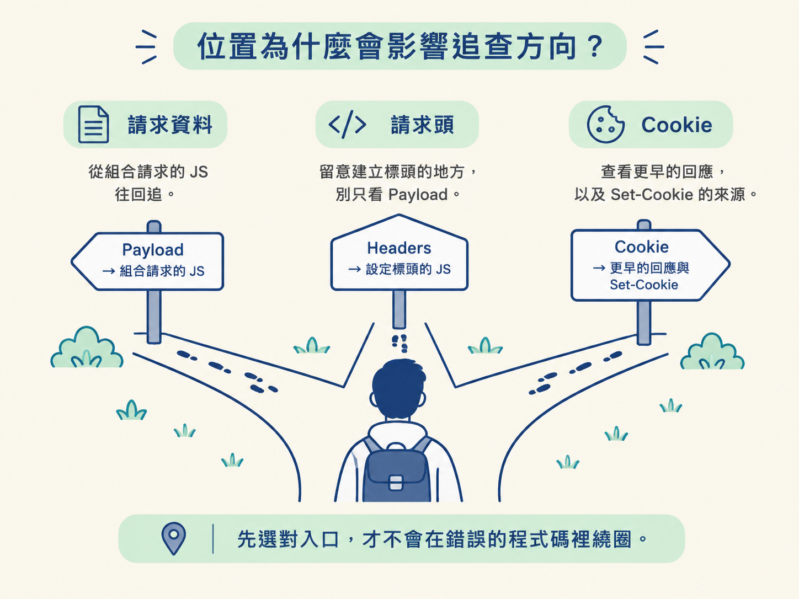
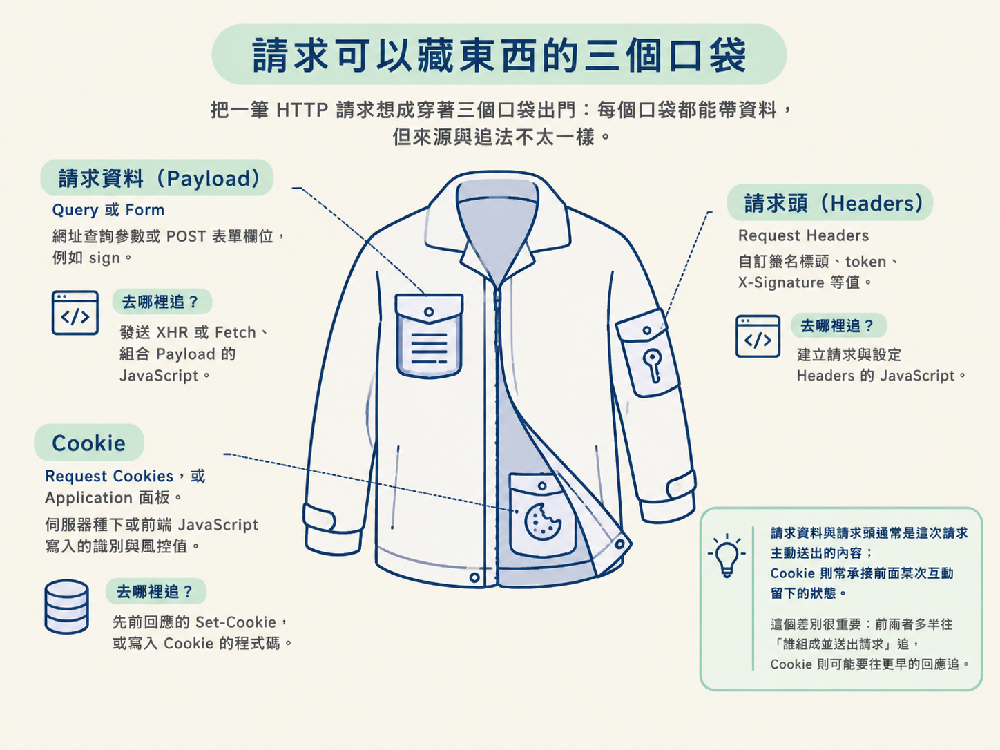
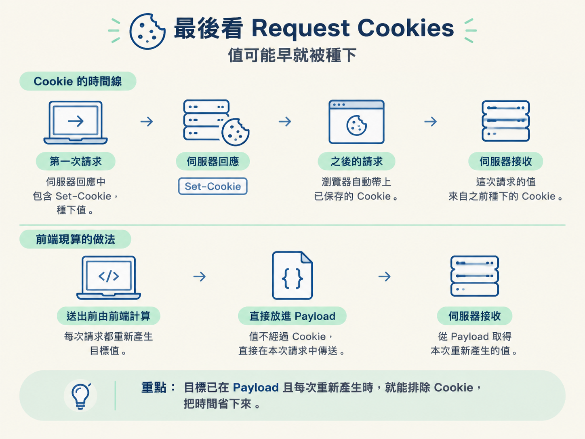
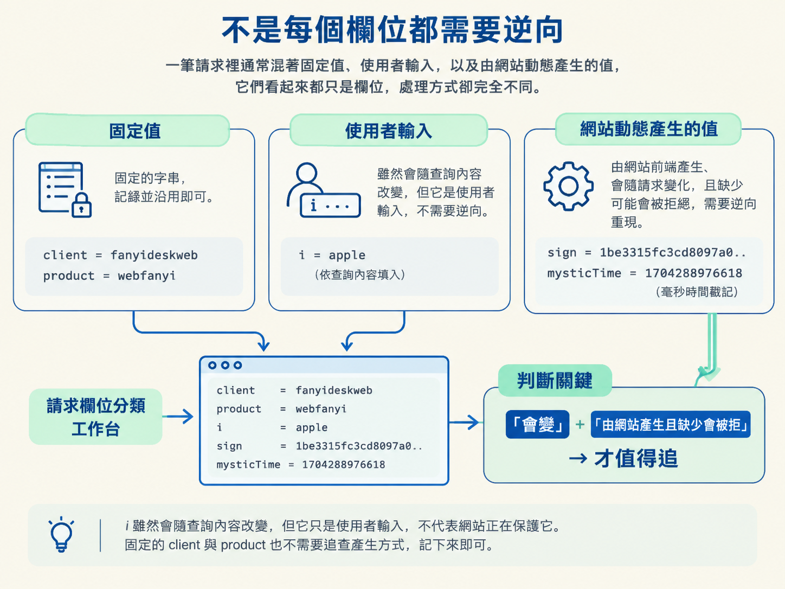

這一節會用翻譯網站的實際請求，辨認加密值可能出現的三個位置：請求資料、請求頭與 Cookie。你也會練習從 Network 面板找出可疑的請求，判斷哪些參數需要重現。
想像一下：你在翻譯網站輸入一個單字，按下查詢後，DevTools 的 Network 面板立刻跳出一筆 webtranslate 請求。
點開 Payload，你看到一大串欄位。其中，sign 是一串 32 位的十六進位字元，完全看不出來源；旁邊的 mysticTime 更奇怪，每次查詢都會改變。
這時很容易立刻衝去搜尋 sign，想從打包過的 JavaScript 裡找出「到底是誰算的」。但這就像看到包裹便急著追查寄件人，卻還沒確認包裹究竟放在門口、管理室，還是信箱裡。
在「抓取 → 遇到反爬限制 → 逆向被保護參數」這條路上，逆向的第一個問題不是「誰算出這個值」，而是「這個值最後被放在哪裡」。它位於請求資料、請求頭或 Cookie，會直接決定接下來該沿哪條線索追查。
前置條件：你已經會開啟 DevTools 的 Network 面板，也能查看單一請求的細節；並且知道 HTTP 方法、標頭、狀態碼與 Cookie 的基本概念。這一節不需要寫程式。
逆向剛開始時，手上最可靠的線索通常只有一個：請求送出去時，實際長什麼樣子。
如果被保護的值放在請求資料裡，而且請求是由頁面 JavaScript 透過 XHR 或 Fetch 送出，就可以從發送請求的位置往回追，尋找是哪段程式組合了這個欄位。
如果值藏在自訂請求頭裡，追查重點仍然是送出請求的程式碼，但要特別留意建立標頭的地方。只盯著 Payload，便可能從一開始就漏掉目標。
如果值來自 Cookie，情況又不同。它可能是伺服器在先前某次回應中透過 Set-Cookie 種下，也可能由前端 JavaScript 寫入。這時只追目前的請求通常不夠，還得往前查看回應與 Cookie 的寫入來源。
因此，先確認位置不是多做一道手續，而是在岔路口先看路標。入口選對了，後面才不會在錯誤的程式碼裡繞圈。

實務上，需要還原的值大多會出現在以下三個位置。可以把一筆 HTTP 請求想成穿著三個口袋出門：每個口袋都能帶資料，但來源與追法不太一樣。
| 位置 | 在 DevTools 哪裡看 | 常見內容 | 適合從哪裡追 |
|---|---|---|---|
| 請求資料 | Payload 分頁的 Query String Parameters 或 Form Data | 網址查詢參數或 POST 表單欄位，例如 sign | 發送 XHR 或 Fetch、組合 Payload 的 JavaScript |
| 請求頭 | Headers 分頁的 Request Headers | 自訂簽名標頭、token、X-Signature 等值 | 建立請求與設定 Headers 的 JavaScript |
| Cookie | Headers 分頁的 Request Cookies，或 Application 面板 | 伺服器種下或前端 JavaScript 寫入的識別與風控值 | 先前回應的 Set-Cookie，或寫入 Cookie 的程式碼 |
請求資料與請求頭通常是這次請求主動送出的內容；Cookie 則常承接前面某次互動留下的狀態。這個差別很重要：前兩者多半往「誰組成並送出請求」追，Cookie 則可能要往更早的回應追。

現在回到翻譯網站，實際在 DevTools 裡確認位置。先打開 Network 面板，再重新整理頁面或觸發一次翻譯查詢，讓 webtranslate 請求出現在清單中。
點開 webtranslate，查看 Payload 分頁。這裡會列出 Query String Parameters 或 Form Data，也就是網址上的查詢參數與 POST 送出的表單欄位。
此時可以留意幾類線索：很長的字串、看似十六進位的內容，以及名稱含有 sign 或 token 的欄位。它們不一定都是加密值，但值得先標記。
這個入口適合用在目標值明確出現在 Payload 時。如果 Payload 裡根本沒有那個值，就不要硬在這裡找；它可能位於請求頭或 Cookie。
接著切到 Headers 分頁，查看 Request Headers。有些網站不把簽名放在請求內文，而是寫進自訂標頭，像把資訊寫在信封外，而不是放進信紙裡。
如果只檢查 Payload，這類欄位很容易被忽略。當你在 Request Headers 看到可疑的 token、X-Signature 或其他動態值，就應該把追查重點轉向建立標頭的程式碼。
同樣在 Headers 分頁中，查看 Request Cookies；也可以到 Application 面板檢查目前保存的 Cookie。
如果可疑值來自 Cookie，就不能直接假設它是這次請求現算的。它可能由伺服器在更早的回應中種下，也可能由前端 JavaScript 寫入。這時應該查看先前回應中的 Set-Cookie，或尋找寫入 Cookie 的程式碼。
反過來說，如果目標已經清楚出現在 Payload，而且每次送出前都重新產生，就不必先把時間花在 Cookie 上。位置的價值，就在於幫你排除不適用的追查方向。

找到位置後，下一個問題是：哪些值真的需要重現？一筆請求裡通常混著固定值、使用者輸入，以及由網站動態產生的值。它們看起來都只是欄位，處理方式卻完全不同。
以有道翻譯的請求為例，可以先做以下分類：
| 欄位 | 值 | 性質 | 處理方式 |
|---|---|---|---|
i | apple | 會改變，但內容由使用者決定 | 依查詢內容填入，不需要逆向 |
sign | 1be3315fc3cd8097a033646862b6e5db | 32 位十六進位，疑似摘要 | 標記為需要重現的目標 |
mysticTime | 1704288976618 | 毫秒時間戳記，每次不同 | 標記為需要重現的目標 |
client | fanyideskweb | 固定字串 | 記錄並沿用 |
product | webfanyi | 固定字串 | 記錄並沿用 |
i 雖然會隨查詢內容改變，但它只是使用者輸入，不代表網站正在保護它。固定的 client 與 product 也不需要追查產生方式，記下來即可。
真正值得投入逆向工作的，是 sign 與 mysticTime 這類由網站前端產生、會隨請求變化，而且缺少後可能遭伺服器拒絕的值。換句話說，「會變」只是線索，還要進一步分辨它是使用者決定的，還是網站計算出來的。

| 情況 | 是否需要繼續逆向 | 原因 |
|---|---|---|
| 欄位是固定字串 | 通常不需要 | 記錄並重送即可 |
| 欄位會變，但由使用者輸入決定 | 通常不需要 | 資料來源已知，例如查詢文字 |
| 欄位每次變化，且由前端自動產生 | 需要進一步確認 | 可能是時間戳記、摘要、簽名或其他保護值 |
| 值來自 Cookie | 不一定要逆向計算 | 可能只需重現取得與保存 Cookie 的流程 |
| 請求不帶該值也能成功 | 不需要 | 它可能不是必要欄位 |
這個判斷方式適合用在「瀏覽器能成功送出請求，但自行重送時失敗」的情況。它能幫你從大量欄位中縮小範圍。
如果請求裡只有固定值與明確的使用者輸入，就不必為了看到長字串而硬做逆向。逆向不是每次抓取都必經的儀式，而是遇到動態保護值時才需要拿出的工具。
逆向被保護的值時，先問「它在哪裡」，再問「誰算出它」。值可能出現在請求資料、請求頭或 Cookie；位置不同，來源與追查方向也不同。
找到位置後，再把欄位分成固定值、使用者輸入與網站動態產生的值。真正需要重現的，通常是由網站產生、會隨請求改變，而且缺少後會影響請求成功的那一類。
到這裡，你已經把「抓取失敗」與「需要逆向的動態值」連起來，也知道該從請求的哪個口袋開始找。下一個問題才是：面對打包過、動輒上萬行的 JavaScript，要怎麼找到處理這個值的程式？下一節會比較兩個定位入口：沿請求堆疊往回追，以及直接使用關鍵字搜尋。